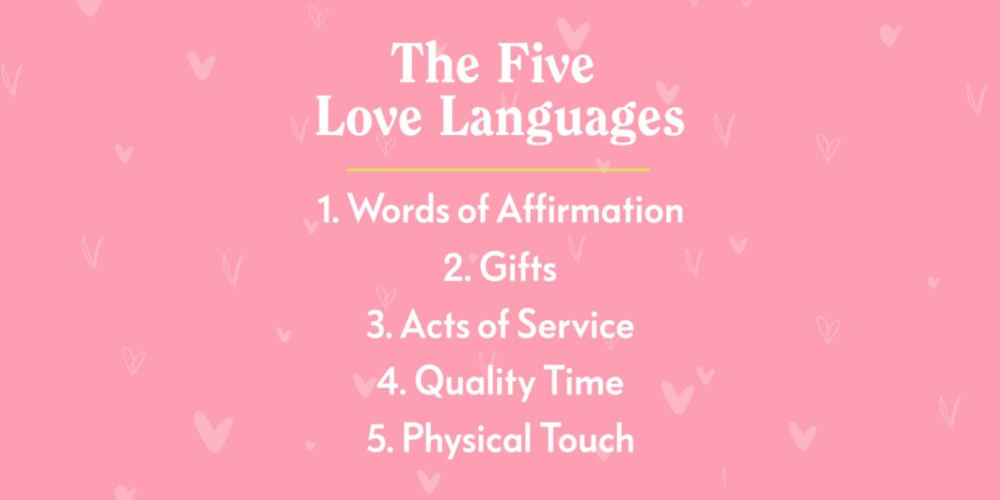
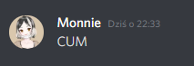
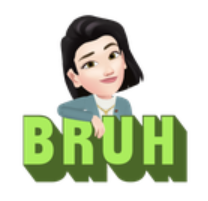
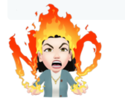
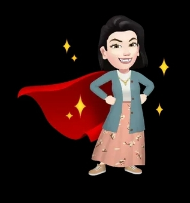
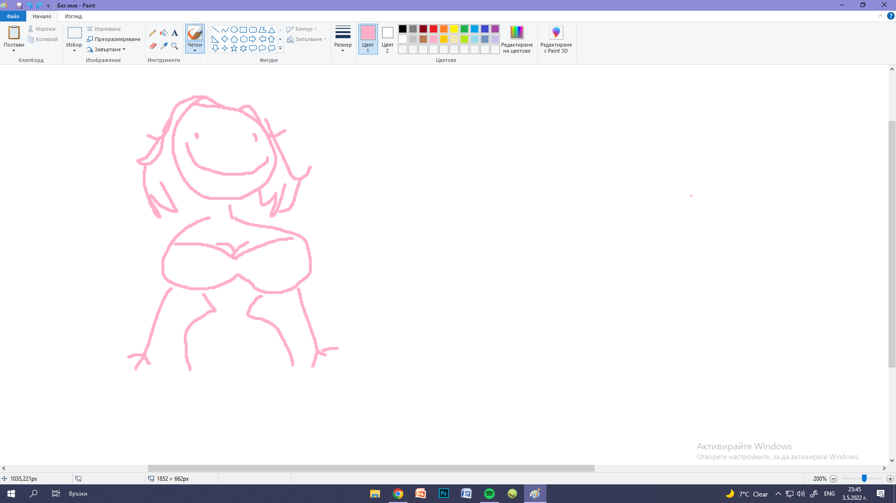
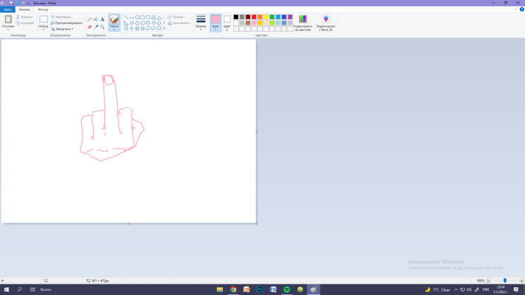

Welcome to the Memories™
A time-travel cringe-invoking shit-eating machine is loaded and ready to go.
Before we proceed, you might want to prepare your stomach for it to not puke.
I had to go through it when creating this Memories™ Time Machine™,
so I'm sure you'll be able to do this too. Also, don't worry about any videos.
The site lowers their volume automatically so you won't get earraped.
THE TIME MACHINE™ USES A SPECIAL TYPE OF GENERATION WHICH MAKES SOME PARTS OF CONTENT
RESEMBLE DISCORD FONT AND STYLES, SO IT FEELS LIKE YOU'RE READING OUR DISCORD
CONVERSATIONS.
Scroll down to continue...
So, as you recall, it started with you messaging me, being a bitch actually
and not wanting to befriend me again or check on me but being a self-indulging,
egoistic, weird and all the other bad words, but wanting only to clear your name
(you never did tho). Disgusting. But I'm still glad it happened.
Conversation Quotes:
Monnie
hey u prob don't ever want to hear from me again but i just wanted to check up on u cus we
haven't rly been talking lately [which is my fault]
I've always been a dick to u but ive been thinking recently about how kind u were to me so
i felt pretty shitty:(
Sorry for all of it hope u forgive me somehow cus u are a rly awesome dude:/
Exeeral
hey
all good
Monnie
Is it:(
I just feel like its rly important for me to be on good terms with u
So i rly want u to be honest
Exeeral
I mean
it's good between us
Monnie
u don't rly sound sincere
Exeeral
Oh alright then
Monnie
:(((((
:C
Exeeral
You are so bad and I fucking hate you you wench! >:0
Monnie
IM REALLY SORRY
FOR REAL
I felt rly rly bad and u didn't deserve the way i treated u!!!
Thats wat im trying to say
Im really sorry!:(
Exeeral
Alright
welcome back
Monnie
awh
That was cute
And a weight off my chest
Im gonna ask for the last time are u REALLY okay
With my apology
Exeeral
yup
And I mean
I am REALLY okay with your apology
Now, of course we both lied. You didn't think I was amazing, and
I didn't really think that "It's good between us" and didn't really care,
thinking you'd let go after this conversation and never talk to me again.
But for some mysterious reason, you started writing to me very often.
It seemed weird, but after a while I thought to myself "She seems
to be kinda nice. Can't be ;0". And so, with the time being our ally,
we somehow began our friendship.
As the time went by, I started liking you a lot and caring,
still thinking that you might be jesting. I felt kind of like
a loser who is not sure if he can trust you and is not being
played. With some of your reassuring I started to believe that
we really are friends.
But before that happened, you were asking questions. Tons of questions.
Exeeral
why the fuck did you ask
Monnie
Why not?
Are you usually late when making arrangements with friends/family?
And please state your favorite color after that
Exeeral
no
Monnie
Reason?
Exeeral
sus questions
Monnie
The only thing sus here is ur attitude
Exeeral
alright
Monnie
Oh
Exeeral
No
black
Monnie
Thank you
Mine is also black :]
But that is unfortunately not a color
But rather a shade
Exeeral
the only shade here is u
shady bastard
Monnie
Do you still refuse to download TikTok
Exeeral [1]
Black is a color, I'd even say that it can't be a shade because it's composed of no color at all
Monnie
And if yes, why?
Monnie (answering [1])
No, fuck you
Next question
Exeeral
didnt you want to be nice?
Monnie
I'm done with that it's too boring
Exeeral
nice
Monnie
:)
Next question
I would ask you to refrain from interrupting me again
Would you rather not be able to express emotions or feel emotions
Sometimes you were batshit crazy, though. Nothing new, of course.
It's completely not like I'm pasting it here because it's hilarious
and I'm laughing at you right now.
Nuh-uh.
Monnie
You are such an interesting person you know?
I don't know if I hate it
Or despise it
Exeeral
I am not, I wish to be ;(
Monnie
You are 😜 😍 🥰 😘
Exeeral
Jesus christ what is wrong with you ;0
Monnie
Nothing :|
Would you rather have the power to make anyone you want fall in love with you or
have the power to read people's minds💐
Side note Discord's emojis are really cool
Exeeral
It's not believe me
Btw you seem to have calmed down
Monnie
Yea I had to lol
Exeeral
Why?
It was just a moment of a silly mood
Monnie
Didn't have anyone to be annoying around
Idk if that sentence made much sense but I hope you got what I meant
Exeeral
aww
you lonely?
Monnie
Wasn't meant as a compliment
None of my other friends react positively to the annoying bitch behavior
And you are too nice to say smth
So I take advantage of it
🙂
Wait, seriously? Is that really it? You just didn't have
anyone else at the time, so you talked to me?
That's kinda sad. Anyway, moving on...
...OKAY stop it right there. We're not moving on just yet.
You really said it so many times wtf?!?!?!?!?!?!?!?!?
"Got nothing to do so I'll talk to him" is that what you still think? :(
That's sad
Exeeral
but I can tell you probably are sick of me for today so I know you really want to go to bed
I wont mind if you are tired no worries ;0
Monnie
Yea I know I would've gotten to bed 100 times now if I was tired of chatting
As I said I don't have anything better to do so don't try to hush me away
Now, at this point of creating the website and scrolling
through our conversations and stuff, I noticed that
we started getting along really quickly. I thought it took
like a week or two, but in fact it was two or three days.
Some of these conversations are funny (Discord timestamp: 02.08.2021).
But anything past and before that is cringe at times (like a convo
about boobs and ass, ughhh).
Look! Your old pfp! I think you had this one when
it all started.
Frankly speaking, it looked ugly as fuck.
OKAY THAT'S A HILARIOUS ONE HERE. You are funny at times
I guess.
Exeeral
so if you have a bf
Still no hugging?
Monnie
No it's the opposite with someone I'm romantically involved with yk
Do you know what love language is?
Exeeral
probably
Monnie
Mmmokay
I feel like mine is physical touch
But at the same time I hate being touched.
You know🤨
So when I'm in a relationship I become really affectionate 👍
Don't you know what your love language isss
It's a really interesting topic
There are a few types:)
Exeeral
It's actually called body language I think
Monnie
Nononono
Qait
W

Ignore the photo lol
Focus on the types
IT'S REALLY INTERESTING
Exeeral
yeah it is so interesting
no one saw that
Monnie
Now that you removed the hilarious emoji
It became rude
😓
Exeeral
sorry
Monnie
OK DON'T TELL ME
Your love language
Idc
Send an emoji
Exeeral
(Question mark gif)
Monnie
🥺
That was a funny gif
Exeeral
So basically if you get touched
by someone you're into
You get fucking erection
Your clit fucking cracks and produces water
like a rock
Monnie
Yes take your mother for example
I fucking piss myself when she comes near me

You know what happened then? Minecraft.
(Video below).
Then, one day, a Minecraft Accident happened.
Minecraft Accident, Secret Acts:
The culprits were
always talking a lot when playing Minecraft together. But that day,
one of them, Exeeral, was enjoying himself building a dungeon basement for their little house.
In complete silence. The second culprit seemed to be upset,
so Exeeral started asking questions, but she was ditching them. Later on
Monnie D. revealed on Discord that she felt like her Minecraft partner
wasn't having fun and that made her feel sad and insecure.
Monnie
thank you really
i was only worried that you would be disappointed
Exeeral
You might just be the best person I know online so far and it's only a shame I can't know you personally
Don't think of me not having fun with you because
At this point, you could have gone completely silent and not talk to me at all
Just nod back
and I'd still have fun
I mean, i'd be concerned about the fact that you might be not having fun, but other than that personally
I'm sold
Monnie
:((((((((((((((((((((((((
thank you
a lot
you're really nice when u want to be
i appreciate it a lot
really
ah honestly thanks
made me feel better and i really hooe you're not saying it for my sake only
but i do trust ur word so it's good enough for me
Exeeral
Every friendship I had, after a month of so was like
First month, all the topics in the world discussed ;0
Later on it was just situational
If something happened, we'd talk about it
How long are we talking now? 4 months?
And these convos are still fucking deep and interesting and funny as well
Monnie
make it 6
Exeeral
You just can't be boring
I don't fucking know how you do this
Monnie
:(((((((((((((((((((((((((((((((((
Exeeral
It's kinda insane
Might be that it just clicks for us no matter what we do ^^
Monnie
:C
thank you exie
i don't even know what else to say
Being absolutely honest with you, that day you made me go
"Awwwww" for the first time. It was really nice, you were worried that I didn't have fun.
It was the first time when I thought that I'm not just a random nobody for you,
but someone you, maybe, hopefully, care about, even if I was a stranger. It might be
a little bit selfish, but the way you were concerned about me made me kinda... Happy?
It's a bit cheesy, but the truth is the truth. And when you read the quote on the
right side, you probably cringed, you always do that in such moments, but to be fair,
you were really, as you call it, "precious" back then, reassuring. Unless it wasn't about that?
It seemed to be that way.
This conversation was a bit lengthy, so I didn't paste a lot of it. If you're interested:
Discord timestamp 04.02.2022, 01:44 your local time and 05.02.2022.
Okay, the previous memory was a bit wholesome, but of course it couldn't
be like this forever. And so, something horryfing happened. Something
unexpected. Awful. I feel dread everytime I think of it. A new era began...
Fucking stickers...



So in retaliation for your dumb fucking stickers, I started sending
spanish memes. It lasted for some time.
From this point onward, we were talking even more regularly,
spending our whole days talking, laughing, doing strange things.
So, let's wind the time up a little bit forward...
The movies we watched! We started with The Silent Voice, and then went with
Your Name. Both movies were great, but Your Name was magical. Watching
it with you made it even better. I wanted to pause
so many times just to admire the visuals. One of the most memorable
experiencese we had, imo.
What happened next? Voice reveal? I sent you a voice message on messenger.
Dumb little thing, I don't have it anymore and I deleted all evidences
of its existence. I can record myself wishing you things if you want to
though, it's your birthday so I'll let you have it if you really want to
rolling eyes.
Anyways, now we're getting to more "modern times" and some more recent events.
The first taste of your art. I wanted to see it for so long,
and this is what I've got so far.


Of course I didn't forget about the birthday gift you gave me, it
was the best thing ever. But I won't show it here, I know you
wouldn't like it. You also sent me some cool wishes, it was
really nice of you and unexpected.
We're now at the very bottom. We went from the furthest
to the newest events and all of it was fun time.
Lots of things changed, as you can see.
Makes me wonder - do you prefer the way we were in these
memories, or are we better now? Do you like the way I was before
or the way I am now? I certainly know that I enjoy you the way you are.
You said many times that when talking to me, you're yourself and you're not
pretending to be someone else, and if that is the real you, I'm really glad
you are this way.
We are in the present now. So what are we doing? You're on a vacation
as of the time of me writing this (19.05.2022). You're still learning Art on your own,
celebrating tons of birthdays, meeting your friends constantly
and who knows what else. I barely know a thing about you. You also
danced with your friend and hit some old guy's chair with your head.
And what am I doing? I'm writing this text and preparing to go to bed.
I'm learning programming and hoping to land a job in Gamedev.
And we both are doing one thing - still being good friends.
Maybe one day we will look at this site thinking "Damn, we didn't
know so many things which we know now", laughing and you'd probably
say something like "Look, you were so stupid back then! Not that
anything has changed." You're too predictable. As you can see, I've
instantly jumped into the future. So let's see where our futures could take us -
our last stop on this site.
Proceed with the button below.